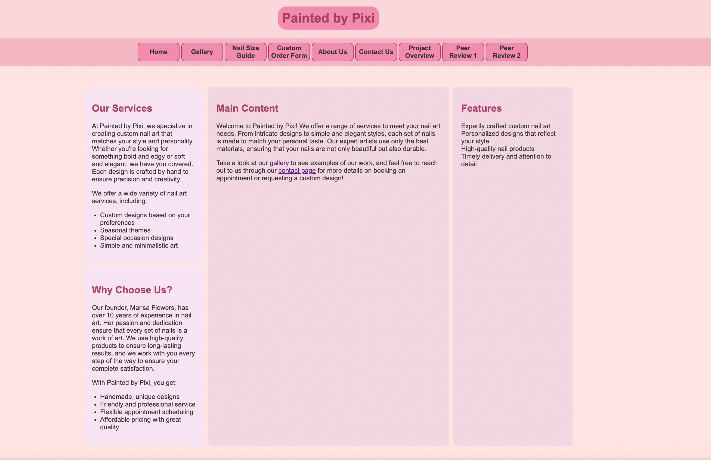

Client Project - Peer Review
~ Ilton Da Costa Neto ~
╔══ Website Checklist ══╗
- Submission has correct links
- There are no upper-cases in the file/folder names
- There are no spaces in the file/folder names
- Pages contain a header, main, footer, and nav bar
- There is sufficient contrast/font sizing
- Website is accessible (alt text for images)
- Content is relative to their client project
- Website is responsive and mobile friendly
╔══ My Comments ══╗